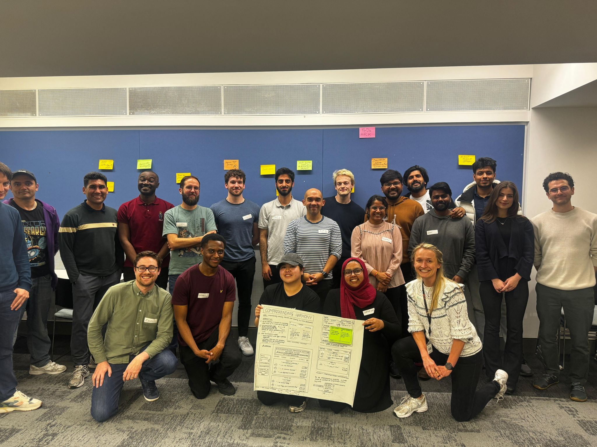
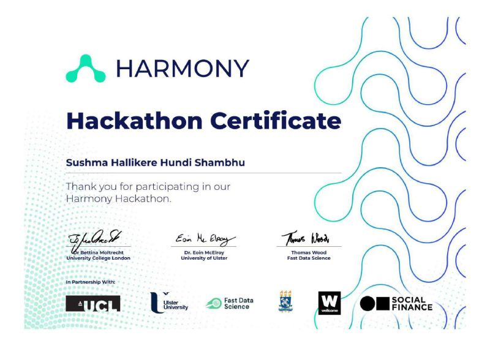

This project showcases a collection of Python-based projects that focus on data analysis, machine learning, and automation. From building data pipelines to creating ML models, the projects demonstrate practical solutions to real-world problems using Python's powerful libraries.
Explore the projects: Python Projects on GitHub
This project contains a range of AI and machine learning projects that explore various algorithms and models. The focus is on implementing predictive analytics, classification, and clustering techniques to solve diverse problems, from customer segmentation to predictive maintenance.
Explore the projects: AI and ML Projects on GitHub
This work highlights my work in analyzing large datasets using Python and pandas. The projects demonstrate data cleaning, transformation, and visualization techniques to extract valuable insights, helping to make informed business decisions or predict future trends.
Explore the projects: Data Analysis Projects on GitHub
This work focuses on the art of data visualization. It showcases various charts, graphs, and interactive dashboards created using libraries such as matplotlib, seaborn, and Plotly, helping to transform complex data into visually appealing and easy-to-understand formats.
Explore the projects: Data Visualization Projects on GitHub
This paper explores the use of ensemble learning methods in mammography analysis. By combining multiple classifiers, it aims to improve the accuracy of breast cancer detection, highlighting the strengths and weaknesses of various ensemble techniques for medical imaging applications.
Read the publication: Comparative Analysis of Ensemble Learning in Mammography - IEEE
This study investigates the application of EfficientNet-B7, a deep learning model, for detecting anomalies in mammograms. The paper demonstrates that using advanced neural networks can improve the detection of abnormalities in breast cancer images, helping to reduce false negatives and increase diagnostic accuracy.
Read the publication: EfficientNet-B7 for Anomaly Detection in Mammograms - Springer
In this industry-level project, I developed machine learning models to predict real-time ship locations and detect vessel anomalies, aiming to enhance maritime safety. By utilizing cloud-based AI frameworks, I created data pipelines, conducted feature engineering, and validated models, ultimately providing actionable insights for operational efficiency and safety.
Project duration: Jun 2024 - Sept 2024, Colchester, UK
The Harmony Hackathon project was developed during a highly competitive coding event that focused on leveraging AI and machine learning technologies to solve real-world challenges. As part of a team of developers and data scientists, we created solutions targeting key issues in areas like sustainability and healthcare. The project brought together innovative ideas and technical expertise to create scalable, AI-powered applications that have the potential to make a significant impact. From predicting environmental risks to optimizing healthcare workflows, our solution demonstrated how AI can be used to address some of the most pressing issues of the modern world. Additionally, it showcased the power of teamwork, collaboration, and real-time problem-solving under pressure.
Some of the major challenges we tackled included:
Explore the project: Harmony Hackathon on GitHub
Below are images that provide a reference for the type of AI solutions we worked on during the hackathon:
 